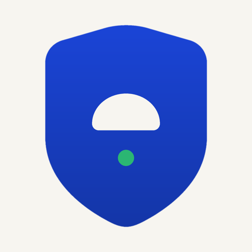
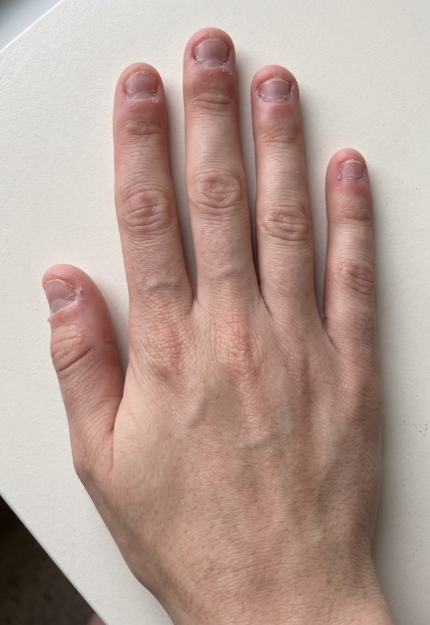
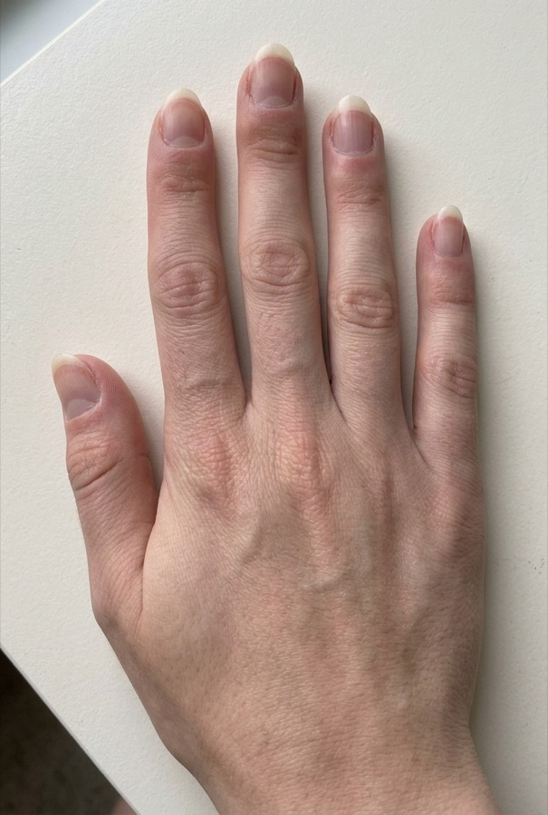

80% of nail biting is unconscious. NailSafe notices the gesture before you do, and shows you your hands changing week after week.
Download on the App Store3-day free trial · no account · 100% on your iPhone


Phone on the desk, front camera on: a chime if your hand stays near your mouth. Nothing is recorded.
Same framing every week, before/after comparator, estimated growth.
Breathing, competing response, your reason. The urge passes.
10 questions, dependency score, reminders at your risky hours.
Habit Reversal Training: notice, replace, see it change.
Onboarding and app fully translated.
The built-in method (Habit Reversal Training) has the strongest published evidence: −83% episodes in 20 weeks in a 2025 case series. NailSafe automates it: detection, competing response, photo proof.
No. Detection runs on the iPhone (Vision); no image is stored or transmitted. No account, no server.
Skin calms in 3 days, a white edge appears around day 7, real length around day 21. A full nail regrows in 3–6 months.
NailSafe Pro: 3-day free trial, then $39.99/year, $6.99/week or $79.99 lifetime.